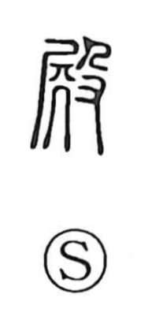

殿

Uncategorized
Kun: tono, dono | On: den, ten
palace ・ hall ・ mansion ・ lord
Explanation
殿 is formed from 屍 and 殳. In early script, 屍 shows a person seated on a stand like 丌, emphasizing the hips and buttocks, and it is the original graph for 臀, the buttocks. 殳 depicts a hand wielding a long cudgel or pike. Brought together, the character reflects the custom of striking the buttocks as a form of chastisement. In later usage it came to denote the grand residence or hall associated with authority—palaces and noble mansions—and by extension it became a respectful title for the person who dwells there, as in the Japanese honorific readings tono and dono.